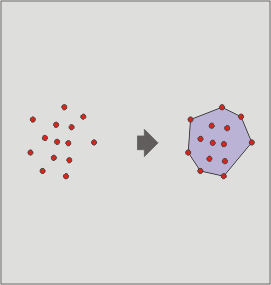

Perimetro convesso (convex hull)
Questo geoprocesso calcola il "perimetro convesso" (convex hull) che comprende le geometrie di tutti gli elementi vettoriali di un layer di input.
Lavora con un solo layer di input, le cui geometrie possono essere di qualsiasi tipo (punto, linea o poligono).

Può essere utile nei seguenti casi:
determinazione dell'area di interesse di un dato fenomeno,
calcolo del diametro dell'area individuata da un insieme di geometrie,
ecc.